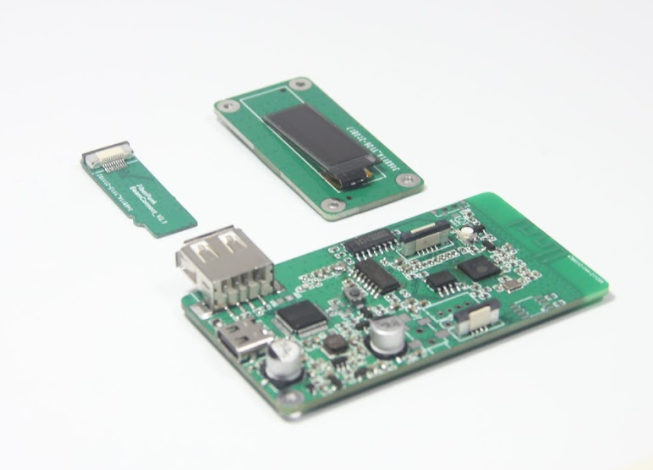

1.Beam模块介绍

Beam是一款针对FDM而开发，解决让大部分FDM设备具备wifi传输文件和wifi控制打印的功能。区别于树莓派，beam模块使用了更加简洁的微处理器来处理这些任务。 - 便于配置 - 低成本，高性价比 - 可扩展 - 可定制(固件开源)
Beam的基本参数规格:
| 参数名称 | 规格 | 描述 |
|---|---|---|
| 模块尺寸 | 7.4x3.5cm | |
| 显示 | OLED(128X32) | |
| 存储 | SD卡 | |
| 供电 | Type-C 5V | |
| 与打印机连接 | USB+SD卡共享 | USB和SD卡同时连接 |
| 外壳 | 3D打印 | 提供开源模型 |
| 对外扩展接口 | 串口,I2C, 2个GPIO |
2.BeamSentry模块介绍
Beam Camear是一个wifi摄像头，配合Beam使用，可以实现wifi监控以及打印失败检测等功能。同时BeamSentry还可以扩展接串口，以及断料检测模块。